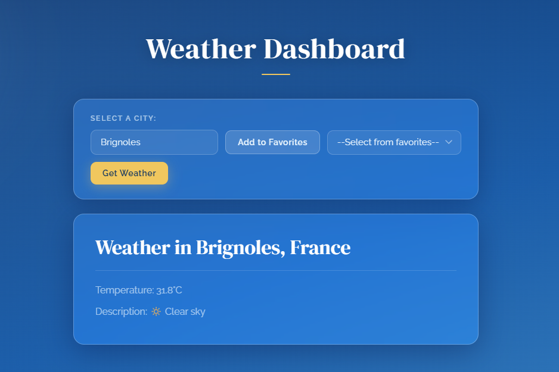
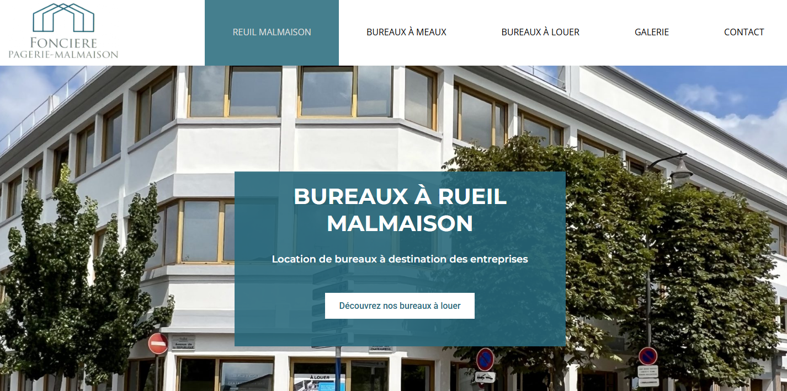

Simon Lucas
Développeur Web et Web Mobile en Formation
Je crée des expériences web élégantes, intuitives et performantes avec une attention particulière aux détails.
Voir mes projetsJe crée des expériences web élégantes, intuitives et performantes avec une attention particulière aux détails.
Voir mes projetsJe suis actuellement en formation diplômante Développeur Web et Web Mobile chez La Plateforme, après avoir suivi une première spécialisation de 4 mois intitulée Langage à la carte Web afin de renforcer mes compétences techniques et approfondir mon expertise dans le développement web.
Titulaire d’un BTS Systèmes Numériques option Informatique et Réseaux, j’ai progressivement orienté mon parcours vers le développement web et le design d’interface, avec l’objectif de créer des sites modernes, fonctionnels et agréables à utiliser.
Au fil de ma formation et de mes projets personnels, j’ai acquis des bases solides en intégration web, développement front-end et utilisation d’outils de conception comme Figma ou Adobe XD. J’accorde une importance particulière à l’expérience utilisateur, au design responsive et à la qualité visuelle des interfaces.
En savoir plus sur mon parcours →HTML 5
CSS 3
JavaScript
React
Database
Figma
Découvrez une sélection de mes travaux récents qui démontrent mes compétences en développement web et design d'interface.

Conception et développement d'un site web permettant de connaitre la météo de n'importe quelle ville en France
HTML 5
CSS 3
JavaScript
Responsive

Reproduction du site Web Foncière Malmaison dans un contexte d'évaluation en cours de formation
HTML 5
CSS 3
Responsive
Vous avez un projet en tête ou une question ? N'hésitez pas à me contacter, je vous répondrai dans les plus brefs délais.